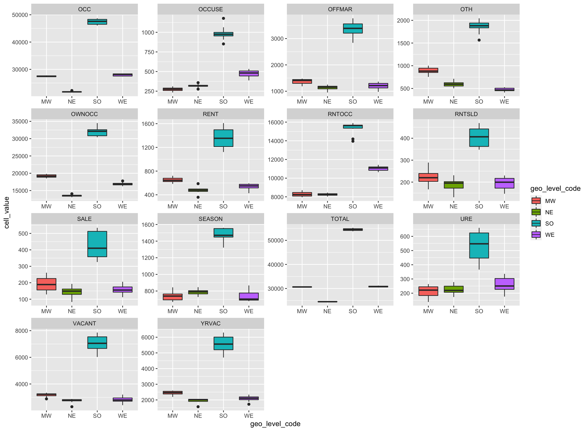
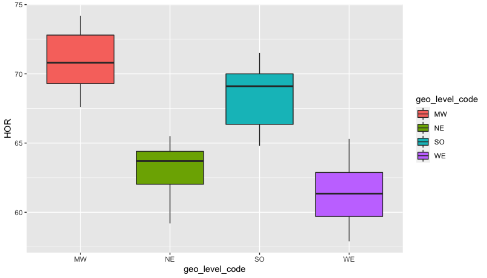
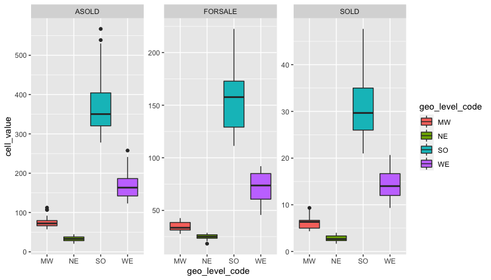
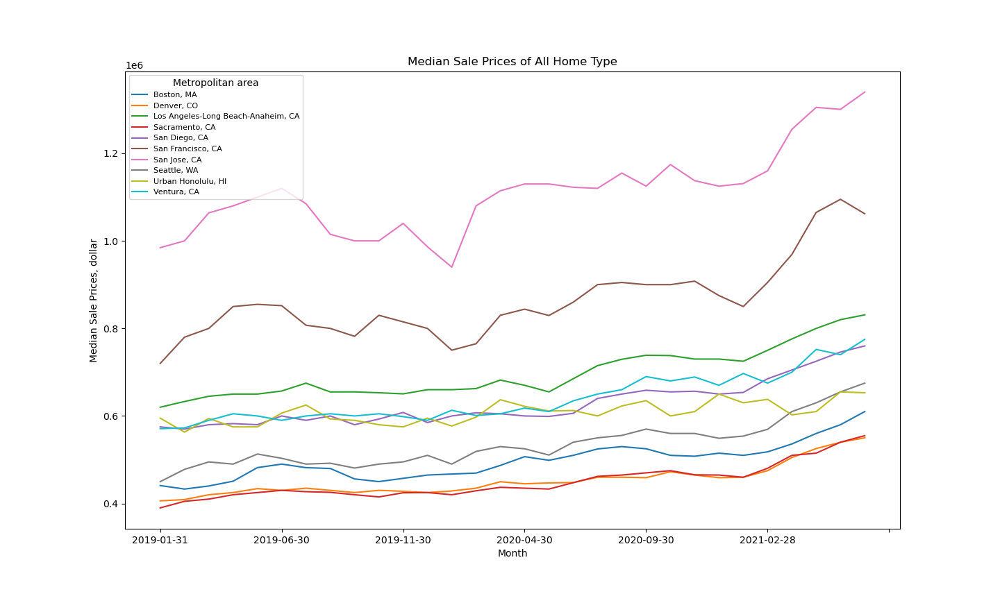
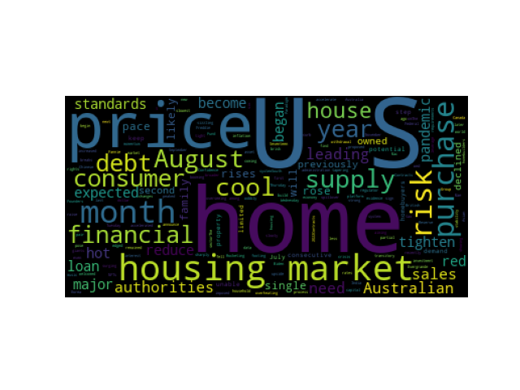

- Housing Vacancies and Homeownership
- HV Estimate: Comparison among regions(R code)
- HOR Comparison among regions(R code)
- New Home Sales
- Comparison among regions(R code)

The figure used cleaned HV regional data. The figure shows region "SO", indicating the "South", have high values in all categories, compared to other regions including the Northeast, Midwest, and West.
All variable shows the "SO" has siginificant higher values. Some variables have close values in other three regions.
The categories in the figure include OCC, for "Occupied Housing Units";
OCCUSE, for "Vacant Housing Units Held Off the Market and For Occasional Use";
OFFMAR, for "Vacant Housing Units Held Off the Market";
OTH, for "Vacant Housing Units Held Off the Market and Vacant for Other Reasons";
OWNOCC, for "Owner Occupied Housing Units";
RENT, for "Vacant Housing Units for Rent";
RNTOCC, for "Renter Occupied Housing Units";
RNTSLD, for "Vacant Housing Units Rented or Sold, Not Yet Occupied";
SALE, for "Vacant Housing Units for Sale";
SEASON, for "Seasonal Housing Units";
TOTAL, for "Total Housing Units";
URE, for "Vacant Housing Units Held Off the Market and Usual Residence Elsewhere";
VACANT, for "Vacant Housing Units";
YRVAC, for "Year-Round Vacant Housing Units".

The figure used cleaned HV regional data.
The figure shows region "SO", indicating the "South", have high values in all categories, compared to other
regions including the Northeast, Midwest, and West.
The category HOR indicates "Homeownership Rate". There is clearly differneces among different regions.

The figure used cleaned NHS regional data.
The figure shows region "SO", indicating the "South", have high values in all categories, compared to other
regions including the Northeast, Midwest, and West.
"SO" has all value higher than other regions. "MW" and "NE" are close to each other compared to others.
The categories in the figure include SOLD, for "New Single-family Houses Sold";
ASOLD, for "Annual Rate for New Single-family Houses Sold";
and FORSALE, for "New Single-family Houses For Sale".
- U.S. region and metropolitan area
- Top 10 median sale price area in the U.S.(Python code)
Below shows the map of Real Estate data such as Median Sales Price and Inverntory of metropolitan area used in the analysis in this portfolio. The analyzed metropolitan areas spread out all U.S. Regions.
Click here if the below doesn't work.

The figure used cleaned Zillow Median Sale Price for SFR data. The top 1 expensive home sale price is San Jose, CA. All of the area indicate increases of sale price from 2019 to 2021. There are 6 our of 8 area are located in California.
- Home buying news
- Wordcloud (Python code)
- All news
- Wordcloud (Python code)

The figure used home buying news csv file. The figure shows words with high frequency in the news mentioned "home buying" in title or content from August 2021 to September 2021. Words like "price", "financial", "risk" are allsociated with "home buying" in news articles.
The figure used merged news dataset. The figure shows words with high frequency in the news mentioned "home buying", "mortgage", or "real estate" in title or content from August 2021 to September 2021. Words like "price" and "mortgage" are over all allsociated with all news articles collected.